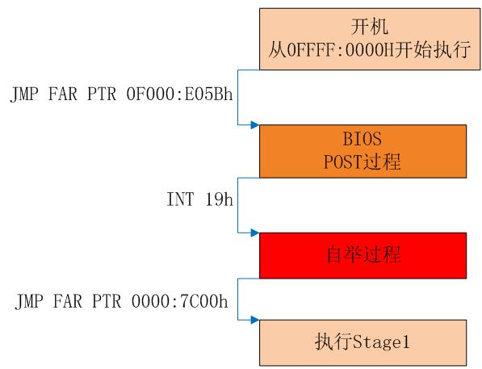

😀 了解BIOS
BIOS的初始化
刚刚发现，BIOS的第一条指令会跳转到某个更低地址的部分。那么，他会做什么呢？请用si往下看看！
exercise3：继续用si看见了什么？请截一个图，放到实验报告里。
这里稍微解释一下。
- 首先，设置了
ss和esp寄存器 - 然后通过
cli指令屏蔽了中断 cld和后面的in和out指令相关（暂时不用管）- 然后通过
in，out指令和IO设备交互，进行初始化，打开A20门（暂时不用管） - 然后用
lidtw与lgdtw加载IDTR与GDTR（ICS学过，跟保护模式有关） - 最后开启保护模式，长跳转到
BIOS的主要模块进行执行
下面是BIOS执行的全过程，在jmp far之后，关闭保护模式，开启实模式，跳转到Stage1执行，其中Stage1就是我们前面说的MBR（即bootloader）！！！
\

POST（不必了解）
至于POST过程，其实不必了解，但我还是提一下，如下：
1）初始化各种主板芯片组
2）初始化键盘控制器8042
3）初始化中断向量 ，中断服务例程.
4）初始化 VGA BIOS 控制器
5）显示BIOS的版本和公司名称
6）扫描软驱和各种介质容量
7）读取CMOS的启动顺序配置，并检测启动装置是否正常
8）调用INT 19h启动自举程序
自举过程
这个实际上就是把MBR的内容从磁盘调入地址为0x7c00的地方。